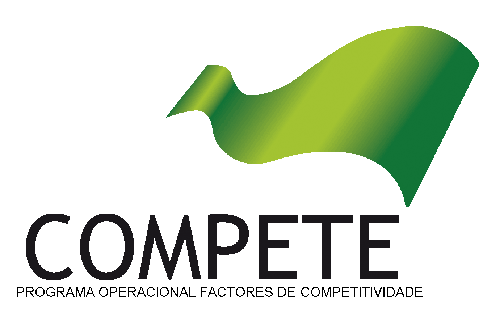

Support material for M.Abbasi, L. Paquete, A.Liefooghe, M. Pinheiro and P.Matias, Improvements on bicriteria pairwise sequence alignment: algorithms and applications, Bioinformatics, 29(8):996-1003, 2013.
MOSAL is a program for computing the Pareto optimal alignments for the bicriteria pairwise sequence alignment. It allows the use of substitution matrices.
Maintainer: Pedro Matias
This software is Copyright © 2013 M.Abbasi, L. Paquete, A.Liefooghe, M. Pinheiro and P.Matias.
This program is free software. You can redistribute it and/or modify it under the terms of the GNU General Public License as published by the Free Software Foundation; either version 2 of the License, or (at your option) any later version.
This program is distributed in the hope that it will be useful, but WITHOUT ANY WARRANTY; without even the implied warranty of MERCHANTABILITY or FITNESS FOR A PARTICULAR PURPOSE. See the GNU General Public License for more details.
Appropriate reference to this software should be made when describing research in which it played a substantive role, so that it may be replicated and verified by others. The bicriteria sequence alignment problem and the algorithms which this software implements are described in detail in [1]. Please, mention the algorithm in the References section of your article. We would appreciate if you would email mosal@dei.uc.pt with citations of papers referencing this work. MOSAL is distributed under the GNU General Public License.
Source code can be found here.
A limited version of the application is available on-line here.
In GNU/Linux, the program can be compiled from source by invoking
$ make
$ ./mosal seq1_file seq2_file [gaps|indels] [dp|dpp -b=NUMBER] [-ss=FILE] [--no-traceback]
| Argument | Description |
|---|---|
seq1_file |
path to the 1st sequence file (FASTA format) |
seq1_file |
path to the 2nd sequence file (FASTA format) |
gaps |
use gaps |
indels |
use indels |
dp |
use Dynamic Programming |
dpp |
use Dynamic Programming with pruning (need to specify -b=NUMBER) |
-ss=FILE |
use substitution score(ss) instead of #matches (path to the ss table) |
-b=NUMBER |
specify the number of bounds for pruning version |
--no-traceback |
output only the scores without the alignments |
| [1] | M.Abbasi, L. Paquete, A.Liefooghe, M. Pinheiro and P.Matias, Improvements on bicriteria pairwise sequence alignment: algorithms and applications, Bioinformatics, 29(8):996-1003, 2013. |
